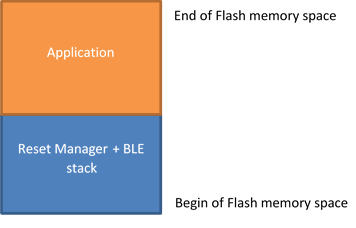
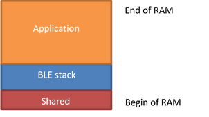
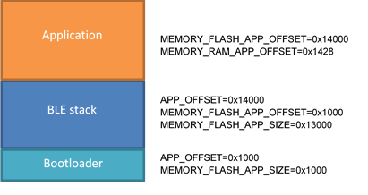

|
Bluetooth LE Static Stack
|
|
Bluetooth LE Static Stack
|
This document describes how to build a Bluetooth LE demo application using the static Bluetooth LE stack approach. It is possible to build a project containing the BlueNRG-LP stack library with all (or part) of its APIs and build a second project that does not contains the stack and nevertheless it can use it. In this way the second project, containing only the application, can be programmed into the device without reprogramming the BlueNRG-LP stack. This is valid as long as the Bluetooth stack does not have to be changed. The document content is valid for both BlueNRG-LP devices.
Follow the list of key steps to be followed:
In the partitioning illustrated in Figure 1:Flash memory partitioning, the Bluetooth LE stack is programmed in a section of the flash together with a simple reset manager. Normally this application only has the task to jump to the application code and call the service routines in the application’s interrupt vector table once an interrupt occurs (necessary because interrupt vector table remapping is not supported in Cortex-M0).
This simple reset manager may be replaced by a more complex application, e.g. a bootloader

|
| Figure 1: Flash memory partitioning |
The reset manager should not use any variable in RAM, hence the only RAM space used by the reset manager firmware is the one used by the Bluetooth LE library. Part of the RAM can be reserved for special variables shared between simple and main application, e.g. to perform a software activation of a bootloader. Figure 2: RAM partitioning shows the RAM statically allocated by the stack (blue area). The BlueNRG-LP stack also needs additional RAM that is provided by the application during stack initialization. This space is allocated by the application.

|
| Figure 2: RAM partitioning |
BLE_SensorDemo_with_Static_Stack is a demonstration application under Project\BLE_Examples directory. This application does not contain the Bluetooth library but uses the APIs provided by the library programmed inside the first area of the Flash.
In order to correctly configure a project to use the Bluetooth LE static library, the symbols of the library must be taken into account by the linker during the linking process. All the pointers to the functions that are exported by the library are accessible through a table in Flash (command table) or directly, using a library containing absolute symbols (e.g. libbluenrg_lp_static_stack.a). The pointers to the callbacks for events generated by the library are instead stored in a table in RAM (event table), so that the application can write its own pointers into this table.
The libbluenrg_lp_static_stack.a file is generated by the BLE_Static_Stack project, so that this file can be used by application's project during linking phase to resolve all the required symbols. The bluenrg_lp_stack_init_if.c file is used in order to automatically register all the application callbacks without taking care of explicitly register them when using the static stack library.
Two linker variables for the application's project need to be set to the proper values. MEMORY_FLASH_APP_OFFSET must be set to the start of the first available sector in Flash. MEMORY_RAM_APP_OFFSET must be set with an address that is equal to (or greater than) the offset of the first available RAM location. See BLE_SensorDemo_StaticStack project to know which RAM offset must be used by your application when using the Static Stack included insided the BlueNRG-LP DK. When using a customized recompiled version of the static Bluetooth LE library, the map file generated together with the Bluetooth LE static stack library indicates which is the first RAM location that is available to the application. E.g.:
Note: Do not define CONFIG_NUM_MAX_LINKS (maximum number of link layer state machines) with a value greater than the one used to build the static stack binary. The static stack binary has been generated with the default value of CONFIG_NUM_MAX_LINKS, which is 8. If more state machines are needed (e.g. more connections), the static stack need to be rebuilt with the desired value of CONFIG_NUM_MAX_LINKS.
It is possible to upgrade only the application firmware over-the-air if the application has the support for the OTA Service Manager. It is also required that the Static Stack is built with a Reset Manager which is able to deal with a "dual firmware" approach. The application area is divided in two sections: the lower part and the higher part.
The example projects includes configurations to support firmware upgrade over-the-air. When using this configuration, the application must link a specific library (libbluenrg_lp_static_stack_w_resetmanager.a), which has been created including the OTA update reset manager.
The difference with respect to the basic configuration are:
The BlueNRG-LP static stack is provided inside the Bluenrg_LP DK in binary format (BLE_StaticStack.hex and BLE_StaticStack_OTA_BTL_ResetManager.hex), ready to be programmed into the device. Usually there is no need to build it again. If you do not want to modify it, you can skip this section.
BLE_StaticStack project in Projects\BLE_Examples folder can be used to build a firmware that contains only the Bluetooth stack library and a reset manager. The projects for IAR Embedded Workbench for ARM, KEIL MDK-ARM and WiSE Studio are provided. Compared to a normal application using BlueNRG stack library, these projects contain two additional C files:
bluenrg_ev_if.c: an array is defined, which is used to store the pointers to the stack callbacks (event table). These pointers must be provided by the application.
After the firmware is built, an external program generates a library, libbluenrg_lp_static_stack.a, containing the symbol table of the stack's function addresses. The pointers to the callback functions has to be stored in an array allocated in RAM (ev_call_table), whose symbol is provided in libbluenrg_lp_static_stack.a. Using a library containing the addresses of all the symbols allows to directly call stack's functions without accessing them through the command table (faster access and less code).
Two macros need to be changed in case the linking process fails because space is not enough, or if the space reserved for the stack becomes lower: RESET_MANAGER_SIZE and MEMORY_FLASH_APP_SIZE.
The preprocessor macro RESET_MANAGER_SIZE must be set to the offset of the first flash address of the main application. MEMORY_FLASH_APP_SIZE linker variable is used to avoid that the flash occupancy becomes higher than expected. If set it to a given value, the linker returns error if the size of the flash needed by the application is higher than the specified value.
E.g. if after the building process the first available address in Flash (rounded to the beginning of the next sector) is 0x10054000, RESET_MANAGER_SIZE can be set to 0x14000 (i.e. 0x10054000 - 0x10040000). MEMORY_FLASH_APP_SIZE must set to 0x14000 to be sure that the building process gives error if the size of the firmware exceeds this limit.
Install GNU ARM Embedded Toolchain and add the binary folder in the system PATH. The utility create_sym_lib.exe in BlueNRG-LP SDK Utility folder needs the following utilities:
Open the Windows Command Prompt and try to invoke those commands to check if they are correctly installed.

|
| Figure 3: Stack allocation in Flash with offset |
 1.8.10
1.8.10